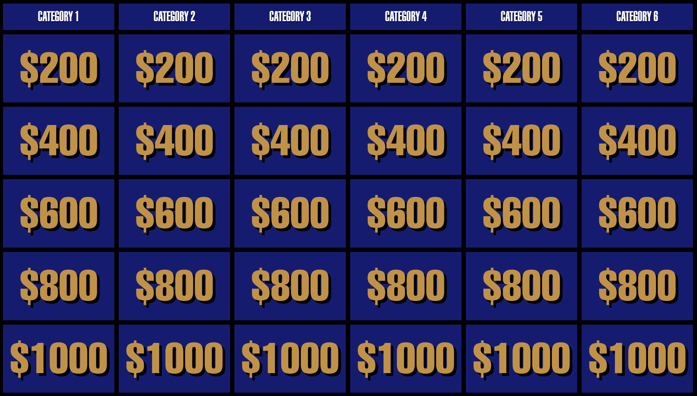
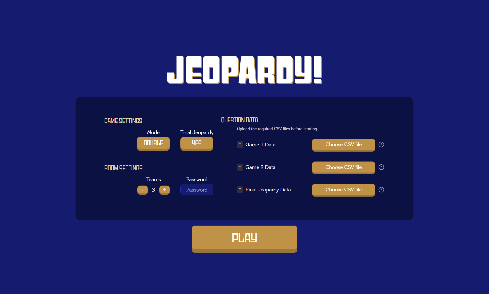
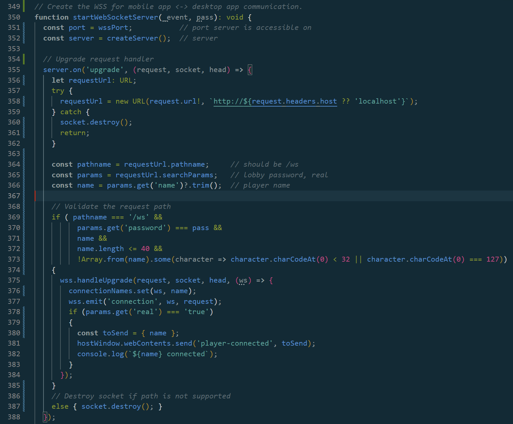
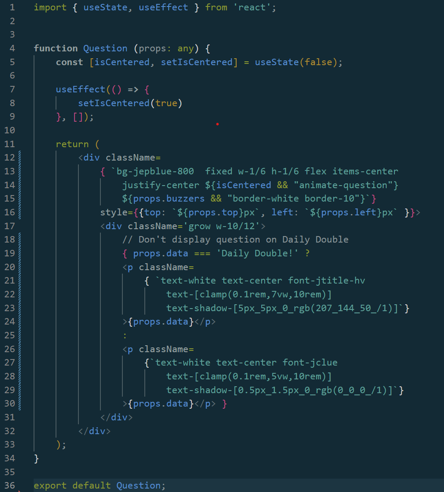

Project report
Jeopardy Game Manager
Full-Stack Developer


Motivation
If you enjoy making and running Jeopardy games as I do, you may have come across tools like JeopardyLabs.com, MultiBuzz.app, etc. These allow you to piece together a workable set-up, but I wanted something better. A single application that allows me to run a game of Jeopardy as similar to the show as possible.
Goals
- A single application to display the questions, track scores and handle buzzers.
- Stylistically as similar to Jeopardy as possible.
- Everyone can particiapte.
Tech-Stack
I decided to use Electron since my application needed multiple windows with interprocess communication. The front-end was written using React with TypeScript, and the back-end was written in JavaScript.
Buzzers
To integrate the buzzer system into the application itself, I decided to run a WebSocket Server within the Electron main process. This allows the mobile app to communicate with the Electron main process. Then the Electron main process can interpret those messages and send commands to the host and board view windows. Here is the code that launches this server.

The buzzers being a part of the main application enabled many features that were essential in creating the most Jeopardy!-like experience. For example, the question reveal.
Question Revealing
One place existing Jeopardy game managers fell short for me was in their ability to display questions like they would on Jeopardy!. My application creates a question component and animates it to the center of the screen. This question component also has a hidden white border that is revealed once the buzzers are enabled indicating to players that they can buzz to answer.

This allows the host to read the question as it is being animated to center screen. Additionally since the buzzers are integrated with the main application, the host can also enable the buzzers shortly after finishing reading the question. When this happens the white border will be enabled, see line 15 of the code above. This ensures the fastest reader isn't at an advantage and those who struggle with comprehending the question as it's read aloud to supplement their understanding by reading along. It is also how the question reveal happens on Jeopardy!
Summary
During this project I learned a lot about networking basics. I had to deal with race conditions with everyone having a buzzer and I had to implement exponential backoff for attempting reconnections. These are a few of the most important features I added to my Jeopardy game manager, if you'd like to explore the application yourself you can download the latest version below.